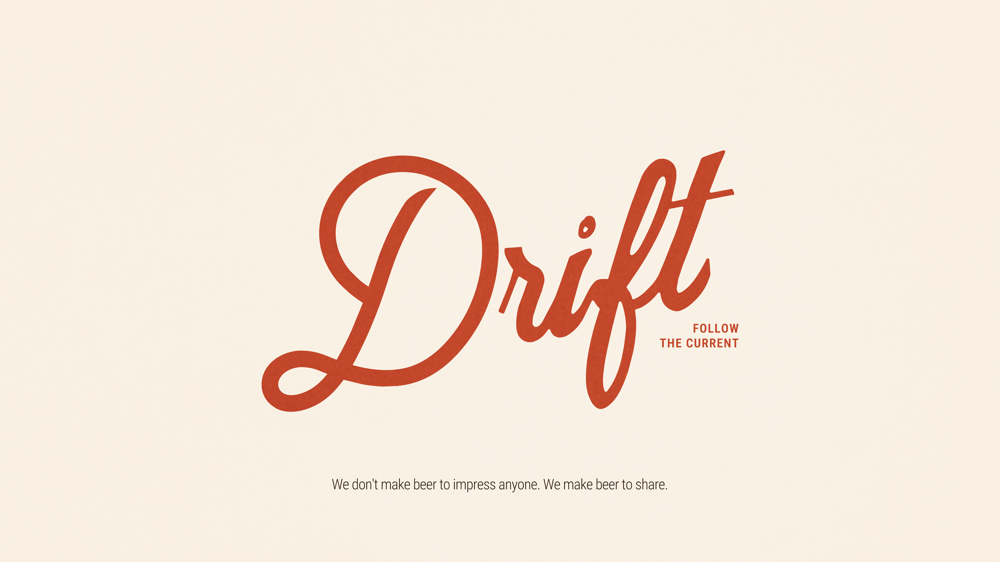
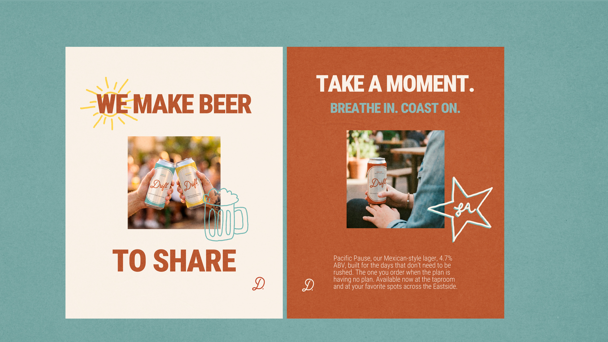
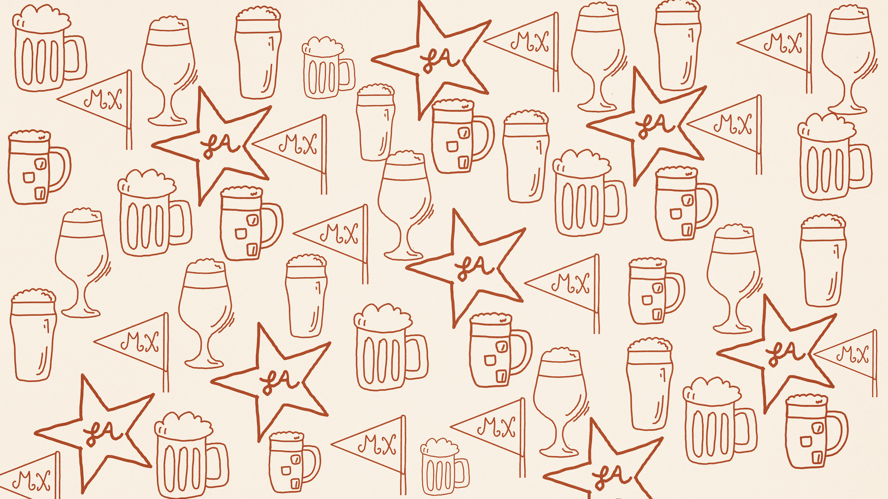
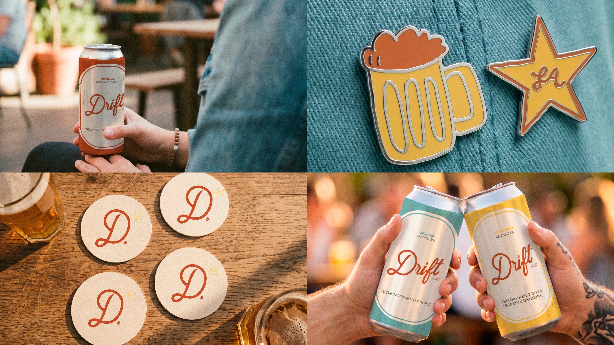
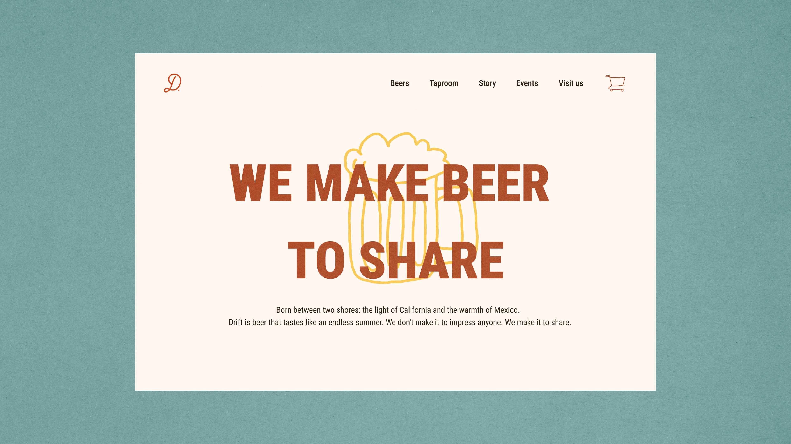
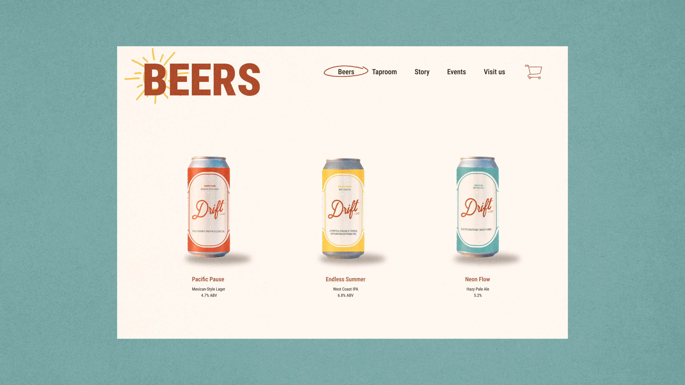
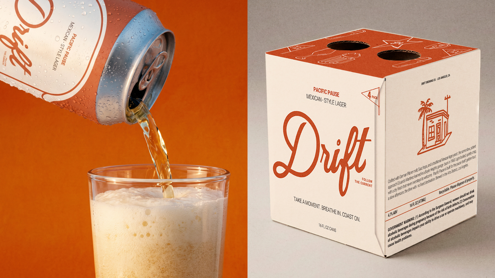

Drift · Mexican-style lager · 2026
Drift
Drift is a Mexican-style lager born between two shores, the light of California and the warmth of Mexico. The brief was a beer that tastes like an endless summer and a brand that never asks to be admired.
The identity runs on one line the founders already lived by: we do not make beer to impress anyone, we make beer to share. Everything follows from there. A script that reads like a signature, a palette drawn from sun and water, and a set of hand drawn marks that work on a can, a coaster, a pin, and a storefront without losing the same voice.

The wordmarkA script that reads like something signed by hand, not set by a studio. The descriptor sits quiet underneath and never competes.
The marksPalms, waves, mugs and pennants, all drawn by hand on the same weight of line. They carry the brand where the wordmark does not fit.
The paletteFive colors taken from a coast at two hours of the day. Terracotta and sun carry the label. Water and dusk hold the space around it.
The typeA condensed sans for the loud lines and a plain one for everything a drinker actually has to read.

The voice in the roomThe same sentence works as a poster in the taproom and as a caption on a phone. It was written to be said out loud.

The canThree beers, one system. The frame and the script stay fixed. Only the color and the name of the beer change, so the shelf reads as one family from across the room.

Off the shelfPins, coasters, and a monogram small enough to survive a beer mat. The brand had to work at the size of the things people take home.


The siteThe homepage says the one thing worth saying. The product page answers the only question that follows it: which one do I order.

One call. A clear list of what is working in your brand and what is not.